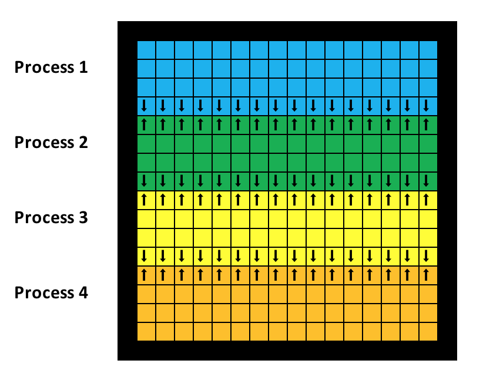
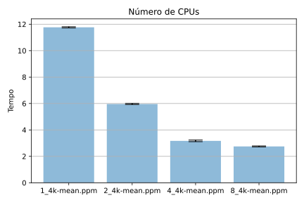
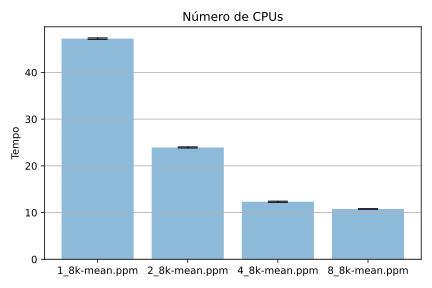
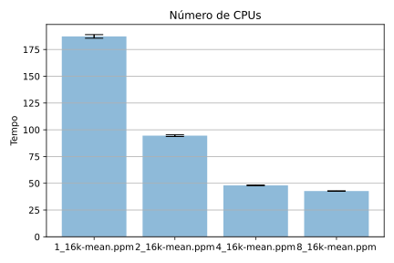

name: inverse layout: true class: center, middle, inverse --- # Programação Paralela ## Trabalho Prático MPI ## Marc Queiroz --- layout: false class: inverse, middle .left-column[ # Algoritmos ] .right-column[ - Convolução Gaussiana 7x7 - Convolução Detecção de bordas 3x3 - Histograma - Salvar arquivo ] --- layout: false class: inverse, middle .left-column[ # Algoritmos Estratégia ] .right-column[  ] --- layout: false class: inverse, middle .left-column[ # Algoritmos - Desfoque ] .right-column[ Filtro Gaussiano: ```C for(int m = -3; m < 4; m++){ for(int n = -3; n < 4; n++){ red += (char) image->data[((i+m)*largura)+j+n].red*gaussianKernel(m+3, n+3); green += (char) image->data[((i+m)*largura)+j+n].green*gaussianKernel(m+3, n+3); blue += (char) image->data[((i+m)*largura)+j+n].blue*gaussianKernel(m+3, n+3); } } ``` Kernel: ```C double gaussianKernel(int i, int j) { double gaussian[49] = { 0, 0, 0, 5, 0, 0, 0, 0, 5, 18, 32, 18, 5, 0, 0, 18, 64, 100, 64, 18, 0, 5, 32, 100, 100, 100, 32, 5, 0, 18, 64, 100, 64, 18, 0, 0, 5, 18, 32, 18, 5, 0, 0, 0, 0, 5, 0, 0, 0}; return gaussian[i*7+j]/1068; //sum of all elms 1068 } ``` ] --- layout: false class: inverse, middle .left-column[ # Algoritmos Divisão do trabalho: ] .right-column[ ```C int startHeight = (int) ID*numberOfRows; int endHeight = (int) (ID+1)*numberOfRows; for (int i = startHeight;i<endHeight;i++) { for(int j =0; j< largura; j++){ red = 0; blue = 0; green = 0; if(i == 0 || i == (altura-3) || j ==0 || j == (largura-3)){ if (i == 0) i = 3; if (i == (altura - 3)) { i = altura; j = largura; } if (j == 0) j = 3; if (j == (largura - 3)) j = largura; } else{ for(int m = -3; m < 4; m++){ for(int n = -3; n < 4; n++){ red += (char) image->data[((i+m)*largura)+j+n].red*gaussianKernel(m+3, n+3); green += (char) image->data[((i+m)*largura)+j+n].green*gaussianKernel(m+3, n+3); blue += (char) image->data[((i+m)*largura)+j+n].blue*gaussianKernel(m+3, n+3); } } newImage->data[(i*largura)+j].red = (char)red; newImage->data[(i*largura)+j].green = (char)green; newImage->data[(i*largura)+j].blue = (char)blue; } } } ``` ] --- layout: false class: inverse, middle .left-column[ # Algoritmos Comunicação: ] .right-column[ ```C if (ID == 0 && num_procs > 1) { // send bottom to (ID+1) -3 <=> 0 MPI_Send(&newImage->data[(ID+1) * altura/num_procs * largura + (-3 * largura)], 3 * largura * 3, MPI_CHAR, ID+1, STD_TAG, MPI_COMM_WORLD); // receive bottom from next (ID+1) 0 <=> 3 MPI_Recv(&newImage->data[(ID+1) * altura/num_procs * largura], 3 * largura * 3, MPI_CHAR, ID+1, STD_TAG, MPI_COMM_WORLD, &status); } else if (ID > 0 && ID < num_procs - 1) { // receive top from (ID-1) -3 <=> 0 MPI_Recv(&newImage->data[ID * altura/num_procs * largura + (-3 * largura)], 3 * largura * 3, MPI_CHAR, ID-1, STD_TAG, MPI_COMM_WORLD, &status); // send top to (ID-1) 0 <=> 3 MPI_Send(&newImage->data[ID * altura/num_procs * largura], 3 * largura * 3, MPI_CHAR, ID-1, STD_TAG, MPI_COMM_WORLD); // send bottom to (ID+1) -3 <=> 0 MPI_Send(&newImage->data[(ID+1) * altura/num_procs * largura + (-3 * largura)], 3 * largura * 3, MPI_CHAR, ID+1, STD_TAG, MPI_COMM_WORLD); // receive bottom from (ID+1) 0 <=> 3 MPI_Recv(&newImage->data[(ID+1) * altura/num_procs * largura], 3 * largura * 3, MPI_CHAR, ID+1, STD_TAG, MPI_COMM_WORLD, &status); } else if (ID != 0) { // receive top from (ID-1) -3 <=> 0 MPI_Recv(&newImage->data[ID * altura/num_procs * largura + (-3 * largura)], 3 * largura * 3, MPI_CHAR, ID-1, STD_TAG, MPI_COMM_WORLD, &status); // send top from (ID-1) 0 <=> 3 MPI_Send(&newImage->data[ID * altura/num_procs * largura], 3 * largura * 3, MPI_CHAR, ID-1, STD_TAG, MPI_COMM_WORLD); } ``` ] --- layout: false class: inverse, middle .left-column[ # Algoritmos Detecção de bordas: ] .right-column[ Filtro Detecção de bordas: ```C for(int m = -1; m < 2; m++){ for(int n = -1; n < 2; n++){ red += image->data[((i+m)*largura)+j+n].red*edgeDetection(m+1, n+1); green += image->data[((i+m)*largura)+j+n].green*edgeDetection(m+1, n+1); blue += image->data[((i+m)*largura)+j+n].blue*edgeDetection(m+1, n+1); } } ``` Kernel: ```C int edgeDetection(int i, int j) { int edge[9] = { -1, -1, -1, -1, 8, -1, -1, -1, -1 }; return edge[i*3+j]; } ``` ] --- layout: false class: inverse, middle .left-column[ # Algoritmos Comunicação: ] .right-column[ ```C if (ID == 0 && num_procs > 1) { // send bottom to (ID+1) -3 <=> 0 MPI_Send(&newImage->data[(ID+1) * altura/num_procs * largura + (-1 * largura)], 1 * largura * 3, MPI_CHAR, ID+1, STD_TAG, MPI_COMM_WORLD); // receive bottom from next (ID+1) 0 <=> 3 MPI_Recv(&newImage->data[(ID+1) * altura/num_procs * largura], 1 * largura * 3, MPI_CHAR, ID+1, STD_TAG, MPI_COMM_WORLD, &status); } else if (ID > 0 && ID < num_procs - 1) { // receive top from (ID-1) -3 <=> 0 MPI_Recv(&newImage->data[ID * altura/num_procs * largura + (-1 * largura)], 1 * largura * 3, MPI_CHAR, ID-1, STD_TAG, MPI_COMM_WORLD, &status); // send top to (ID-1) 0 <=> 3 MPI_Send(&newImage->data[ID * altura/num_procs * largura], 1 * largura * 3, MPI_CHAR, ID-1, STD_TAG, MPI_COMM_WORLD); // send bottom to (ID+1) -3 <=> 0 MPI_Send(&newImage->data[(ID+1) * altura/num_procs * largura + (-1 * largura)], 1 * largura * 3, MPI_CHAR, ID+1, STD_TAG, MPI_COMM_WORLD); // receive bottom from (ID+1) 0 <=> 3 MPI_Recv(&newImage->data[(ID+1) * altura/num_procs * largura], 1 * largura * 3, MPI_CHAR, ID+1, STD_TAG, MPI_COMM_WORLD, &status); } else if (ID != 0) { // receive top from (ID-1) -3 <=> 0 MPI_Recv(&newImage->data[ID * altura/num_procs * largura + (-1 * largura)], 1 * largura * 3, MPI_CHAR, ID-1, STD_TAG, MPI_COMM_WORLD, &status); // send top from (ID-1) 0 <=> 3 MPI_Send(&newImage->data[ID * altura/num_procs * largura], 1 * largura * 3, MPI_CHAR, ID-1, STD_TAG, MPI_COMM_WORLD); } ``` ] --- layout: false class: inverse, middle .left-column[ # Algoritmos - Histograma - Divisão de Trabalho - Extração das cores ] .right-column[ <br/> ```C int startHeight = (int) ID*numberOfRows; int endHeight = (int) (ID+1)*numberOfRows; count = 0; for (int i = startHeight; i < endHeight; i++){ for (int k = 0; k < cols; k++){ image->data[(i*cols)+k].red = floor((image->data[(i*cols)+k].red * 4) / 256); image->data[(i*cols)+k].green = floor((image->data[(i*cols)+k].green * 4) / 256); image->data[(i*cols)+k].blue = floor((image->data[(i*cols)+k].blue * 4) / 256); } } ``` ] --- layout: false class: inverse, middle .left-column[ # Algoritmos - Histograma - Divisão de Trabalho - Contagem das cores ] .right-column[ <br/> ```C for (j = 0; j <= 3; j++) { for (k = 0; k <= 3; k++) { for (l = 0; l <= 3; l++) { for (i = startHeight; i < endHeight; i++) { for (int m = 0; m < cols; m++) { if (image->data[(i*cols)+m].red == j && image->data[(i*cols)+m].green == k && image->data[(i*cols)+m].blue == l) { count++; } } } h[x] = (float) count / n; count = 0; x++; } } } MPI_Reduce(h, hOriginal, 64, MPI_FLOAT, MPI_SUM, 0, MPI_COMM_WORLD); ``` ] --- layout: false class: inverse, middle .left-column[ # Algoritmos - Salvar arquivo ] .right-column[ ```C FILE *file = fopen(filename, "w+"); MPI_Barrier(MPI_COMM_WORLD); int sync = ID; MPI_Status status; char initial[50]; sprintf(initial, "P6\n%d %d\n255\n", width, height); if (ID == 0) { fprintf(file, "P6\n%d %d\n255\n", width, height); fseek(file, strlen(initial) + ID * image->x/num_procs * image->y * 3, SEEK_SET); size_t result = fwrite(&image->data[ID * image->x/num_procs * image->y], 1, 3 * image->x/num_procs * image->y, file); fflush(file); if (num_procs > 1) { MPI_Ssend(&sync, 1 , MPI_INT, ID+1, STD_TAG, MPI_COMM_WORLD); MPI_Recv(&sync, 1, MPI_INT, num_procs-1, STD_TAG, MPI_COMM_WORLD, &status); } } else if (ID > 0 && ID < num_procs - 1) { MPI_Recv(&sync, 1, MPI_INT, ID-1, STD_TAG, MPI_COMM_WORLD, &status); fseek(file, strlen(initial) + ID * image->x/num_procs * image->y * 3, SEEK_SET); size_t result = fwrite(&image->data[ID * image->x/num_procs * image->y], 1, 3 * image->x/num_procs * image->y, file); fflush(file); MPI_Ssend(&sync, 1 , MPI_INT, ID+1, STD_TAG, MPI_COMM_WORLD); } else { MPI_Recv(&sync, 1, MPI_INT, ID-1, STD_TAG, MPI_COMM_WORLD, &status); fseek(file, strlen(initial) + ID * image->x/num_procs * image->y * 3, SEEK_SET); size_t result = fwrite(&image->data[ID * image->x/num_procs * image->y], 1, 3 * image->x/num_procs * image->y, file); fflush(file); MPI_Ssend(&ID, 1, MPI_INT, 0, STD_TAG, MPI_COMM_WORLD); } MPI_Barrier(MPI_COMM_WORLD); fclose(file); ``` ] --- layout: false class: inverse, middle .left-column[ # Metodologia ] .right-column[ - Arquivos de entrada: 4k, 8k, 16k - Executar o programa com 1, 2, 4 e 8 processos - Captura o tempo de execução paralelo e serial ] --- layout: false class: inverse, middle .left-column[ # Metodologia - Tarefas ] .right-column[ 1. Histograma da imagem Original 2. Convolução Gaussiana 3. Salvar arquivo da convolução 4. Histograma da Convolução Gaussiana 5. Convolução Detecção de Bordas 6. Salvar arquivo da convolução 7. Histograma da Convolução ] --- layout: false class: inverse, middle .left-column[ # Metodologia - Hardware ] .right-column[ CPU(s): 8, Intel(R) Core(TM) i7-2600 CPU @ 3.40GHz Memória: 16GB DDR3 HD: SSD 240MB SO: archlinux 5.8.1-arch1-1 x86\_64 GNU/Linux. Compilador: GCC v10.1.0. Flags: -lm -Ofast. ] --- layout: false class: inverse, middle .left-column[ # Resultado - Original: 4k-b.ppm ] .right-column[ <img src="original.png" width="800"/> ] --- layout: false class: inverse, middle .left-column[ # Resultado - Gaussiano: 4k-b.ppm ] .right-column[ <img src="gaussiana.png" width="800"/> ] --- layout: false class: inverse, middle .left-column[ # Resultado - Detecção de Borda: 4k-b.ppm ] .right-column[ <img src="edge.png" width="800"/> ] --- layout: false class: inverse, middle .left-column[ # Tempo serial ] .right-column[ <br/> <style type="text/css"> .tg {border-collapse:collapse;border-spacing:0;} .tg td{border-color:black;border-style:solid;border-width:1px;font-family:Arial, sans-serif;font-size:14px; overflow:hidden;padding:10px 5px;word-break:normal;} .tg th{border-color:black;border-style:solid;border-width:1px;font-family:Arial, sans-serif;font-size:14px; font-weight:normal;overflow:hidden;padding:10px 5px;word-break:normal;} .tg .tg-ho3n{border-color:inherit;font-size:26px;text-align:center;vertical-align:top} </style> <table class="tg"> <thead> <tr> <th class="tg-ho3n">Tamanho<br>da<br>Entrada</th> <th class="tg-ho3n">Tempo<br>Serial</th> <th class="tg-ho3n">Tempo<br>Paralelo</th> <th class="tg-ho3n">Porcentagem<br>do tempo<br>Serial</th> </tr> </thead> <tbody> <tr> <td class="tg-ho3n">N=4k</td> <td class="tg-ho3n"><span style="font-weight:400;font-style:normal">0.11100725</span></td> <td class="tg-ho3n"><span style="font-weight:400;font-style:normal">5.9130299875</span></td> <td class="tg-ho3n"><span style="font-weight:bold;font-style:normal">1.84%</span></td> </tr> <tr> <td class="tg-ho3n">N=8k</td> <td class="tg-ho3n"><span style="font-weight:400;font-style:normal">0.3498620291666667</span></td> <td class="tg-ho3n"><span style="font-weight:400;font-style:normal">23.5683986</span></td> <td class="tg-ho3n"><span style="font-weight:bold;font-style:normal">1.46%</span></td> </tr> <tr> <td class="tg-ho3n">N=16k</td> <td class="tg-ho3n"><span style="font-weight:400;font-style:normal">1.2548842333333334</span></td> <td class="tg-ho3n"><span style="font-weight:400;font-style:normal">93.13205048750001</span></td> <td class="tg-ho3n"><span style="font-weight:bold;font-style:normal">1.32%</span></td> </tr> </tbody> </table> ] --- layout: false class: inverse, middle, center .left-column[ # Gráfico CPUs vs Tempo N=4k ] .right-column[  ] --- layout: false class: inverse, middle, center .left-column[ # Gráfico CPUs vs Tempo N=8k ] .right-column[  ] --- layout: false class: inverse, middle, center .left-column[ # Gráfico CPUs vs Tempo N=16k ] .right-column[  ] --- layout: false class: inverse, middle .left-column[ # Lei de Amndahl - Speedup teórico ] .right-column[ <style type="text/css"> .tg {border-collapse:collapse;border-spacing:0;} .tg td{border-color:black;border-style:solid;border-width:1px;font-family:Arial, sans-serif;font-size:14px; overflow:hidden;padding:10px 5px;word-break:normal;} .tg th{border-color:black;border-style:solid;border-width:1px;font-family:Arial, sans-serif;font-size:14px; font-weight:normal;overflow:hidden;padding:10px 5px;word-break:normal;} .tg .tg-lxvh{border-color:inherit;font-family:Arial, Helvetica, sans-serif !important;;font-size:26px;text-align:center;vertical-align:top} </style> <table class="tg"> <thead> <tr> <th class="tg-lxvh"></th> <th class="tg-lxvh">2 CPUs</th> <th class="tg-lxvh">4 CPUs</th> <th class="tg-lxvh">8 CPUs</th> <th class="tg-lxvh">Inf.</th> </tr> </thead> <tbody> <tr> <td class="tg-lxvh">Amdahl<br><br>N=4k</td> <td class="tg-lxvh"><br>1.96381208</td> <td class="tg-lxvh"><br>3.79045546</td> <td class="tg-lxvh"><br>7.08596889</td> <td class="tg-lxvh"><br>54.26706127</td> </tr> <tr> <td class="tg-lxvh">Amdahl<br><br>N=8k</td> <td class="tg-lxvh"><br>1.971166947</td> <td class="tg-lxvh"><br>3.831849963</td> <td class="tg-lxvh"><br>7.256947906</td> <td class="tg-lxvh"><br>68.36483709</td> </tr> <tr> <td class="tg-lxvh">Amdahl<br><br>N=16k</td> <td class="tg-lxvh"><br>1.973758671</td> <td class="tg-lxvh"><br>3.846578021</td> <td class="tg-lxvh"><br>7.318864484</td> <td class="tg-lxvh"><br>75.21565114</td> </tr> </tbody> </table> ] --- layout: false class: inverse, middle .left-column[ # Tabelas Tempo paralelo T(p) Speedup S(p) Eficiência E(p) Overhead O(p) # Análise ] .right-column[ <div style="text-align: center;margin-left: auto;"> <style type="text/css"> .tg {border-collapse:collapse;border-spacing:0;} .tg td{border-color:black;border-style:solid;border-width:1px;font-family:Arial, sans-serif;font-size:14px; overflow:hidden;padding:10px 5px;word-break:normal;} .tg th{border-color:black;border-style:solid;border-width:1px;font-family:Arial, sans-serif;font-size:14px; font-weight:normal;overflow:hidden;padding:10px 5px;word-break:normal;} .tg .tg-0lax{border-color:inherit;font-size:20px;text-align:center;vertical-align:center;} </style> <table class="tg"> <thead> <tr> <th class="tg-0lax"></th> <th class="tg-0lax">1 CPU</th> <th class="tg-0lax">2 CPUs</th> <th class="tg-0lax">4 CPUs</th> <th class="tg-0lax">8 CPUs</th> </tr> </thead> <tbody> <tr> <td class="tg-0lax">T(p) N=4k</td> <td class="tg-0lax">11.76549932</td> <td class="tg-0lax">5.963646467</td> <td class="tg-0lax">3.171678767</td> <td class="tg-0lax">2.7512954</td> </tr> <tr> <td class="tg-0lax">S(p)</td> <td class="tg-0lax">1</td> <td class="tg-0lax">1.972905459</td> <td class="tg-0lax">3.709641251</td> <td class="tg-0lax">4.276283718</td> </tr> <tr> <td class="tg-0lax">E(p)</td> <td class="tg-0lax">1</td> <td class="tg-0lax">0.9864527294</td> <td class="tg-0lax">0.9274103129</td> <td class="tg-0lax">0.5345354648</td> </tr> <tr> <td class="tg-0lax">O(p)</td> <td class="tg-0lax">0</td> <td class="tg-0lax">0.1617936167</td> <td class="tg-0lax">0.92121575</td> <td class="tg-0lax">10.24486388</td> </tr> <tr> <td class="tg-0lax">T(p) N=8k</td> <td class="tg-0lax">47.24319058</td> <td class="tg-0lax">23.93996518</td> <td class="tg-0lax">12.32231492</td> <td class="tg-0lax">10.76812372</td> </tr> <tr> <td class="tg-0lax">S(p)</td> <td class="tg-0lax">1</td> <td class="tg-0lax">1.973524354</td> <td class="tg-0lax">3.834298398</td> <td class="tg-0lax">4.387010147</td> </tr> <tr> <td class="tg-0lax">E(p)</td> <td class="tg-0lax">1</td> <td class="tg-0lax">0.986762177</td> <td class="tg-0lax">0.9585745995</td> <td class="tg-0lax">0.5483762684</td> </tr> <tr> <td class="tg-0lax">O(p)</td> <td class="tg-0lax">0</td> <td class="tg-0lax">0.6367397833</td> <td class="tg-0lax">2.046069083</td> <td class="tg-0lax">38.90179915</td> </tr> <tr> <td class="tg-0lax">T(p) N=16k</td> <td class="tg-0lax">187.2455989</td> <td class="tg-0lax">94.48619903</td> <td class="tg-0lax">48.0628298</td> <td class="tg-0lax">42.73357418</td> </tr> <tr> <td class="tg-0lax">S(p)</td> <td class="tg-0lax">1</td> <td class="tg-0lax">1.981782683</td> <td class="tg-0lax">3.895981904</td> <td class="tg-0lax">4.381735164</td> </tr> <tr> <td class="tg-0lax">E(p)</td> <td class="tg-0lax">1</td> <td class="tg-0lax">0.9908913414</td> <td class="tg-0lax">0.9739954759</td> <td class="tg-0lax">0.5477168955</td> </tr> <tr> <td class="tg-0lax">O(p)</td> <td class="tg-0lax">0</td> <td class="tg-0lax">1.726799133</td> <td class="tg-0lax">5.005720267</td> <td class="tg-0lax">154.6229945</td> </tr> </tbody> </table> </div> ] --- layout: false class: inverse, middle .left-column[ # Escalabilidade Tabela de eficiência ] .right-column[ <br> <style type="text/css"> .tg {border-collapse:collapse;border-spacing:0;} .tg td{border-color:black;border-style:solid;border-width:1px;font-family:Arial, sans-serif;font-size:14px; overflow:hidden;padding:10px 5px;word-break:normal;} .tg th{border-color:black;border-style:solid;border-width:1px;font-family:Arial, sans-serif;font-size:14px; font-weight:normal;overflow:hidden;padding:10px 5px;word-break:normal;} .tg .tg-lxvh{border-color:inherit;font-family:Arial, Helvetica, sans-serif !important;;font-size:26px;text-align:center;vertical-align:top} </style> <table class="tg"> <thead> <tr> <th class="tg-lxvh">Eficiência</th> <th class="tg-lxvh">1 CPU</th> <th class="tg-lxvh">2 CPUs</th> <th class="tg-lxvh">4 CPUs</th> <th class="tg-lxvh">8 CPUs</th> </tr> </thead> <tbody> <tr> <td class="tg-lxvh">N=4k</td> <td class="tg-lxvh">1</td> <td class="tg-lxvh"><span style="font-weight:bold">0.9864527294</span></td> <td class="tg-lxvh">0.9274103129</td> <td class="tg-lxvh">0.5345354648</td> </tr> <tr> <td class="tg-lxvh">N=8k</td> <td class="tg-lxvh">1</td> <td class="tg-lxvh">0.986762177</td> <td class="tg-lxvh"><span style="font-weight:bold">0.9585745995</span></td> <td class="tg-lxvh">0.5483762684</td> </tr> <tr> <td class="tg-lxvh">N=16k</td> <td class="tg-lxvh">1</td> <td class="tg-lxvh">0.9908913414</td> <td class="tg-lxvh">0.9739954759</td> <td class="tg-lxvh"><span style="font-weight:bold">0.5477168955</span></td> </tr> </tbody> </table> ] --- layout: false class:inverse,center,middle FIM contato: marc.queiroz at gmail.com.br